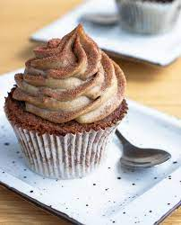

Mafin

Opis:
Mafini su pečena hrana razlicite veličine, u obliku kolača, sa „vlažnom, krupnozrnom“ teksturom. Mafini su dostupni u slanoj varijanti, kao što su mafini od kukuruznog brašna i sira, ili u slatkim varijantama kao što su arome borovnice, čokolade, limuna ili banane. Zaslađeni mafini se kreću od lagano zaslađenih mafina do proizvoda koji su „bogatiji od mnogih kolača mastima i šećerom“.
Potrošači smatraju da su mafini zdraviji izbor od krofni; međutim, krofne imaju od 170 do 270 kalorija svaka, dok veliki pekarski mafini imaju od 340 do 630 kalorija svaki i 11 do 27 grama ukupne masti. Većina mafina je varljivo bogata mastima, sa sadržajem masti do 40%, čega mnogi potrošači nisu svesni.
Sastojci:
- 2 solje brasna
- 1/2 solja secera
- 1 kesica praska za pecivo
- 1 jaje
- 1/4 solje ulja
- 1 solja mleka
- Dodatni ukusi (voce,cokolada...)
Koraci:
- U jednoj posudi pomesati brasno,prasak za pecivo i secer,a u drugoj lagano viljuskom izmutiti jaje,ulje i mleko.
- Mokre sastojke dodati suvim i dobro izmesati kasikom kako bi se sve lepo povezalo.
-
U ovu smesu dodati sta god pozelite. Npr. kockice cokolade sa suvim grozdjem i lesnicima,izgnjecene 2 banane i vanilin secer. Umesto solje mleka,mozete staviti pola solje jogurta,a pola mleka i dodati jednu kasiku kisele pavlake.
-
Zagrejati rernu na 180.U kalupe za maffine stavite papirnate korpice i punite ih pripremljenom smesom do jedno 3/4.
- Peci oko 20-ak minuta.
- Posle pecenja mafin mozete politi cokoladom i staviti mrvice ili dodatno voce